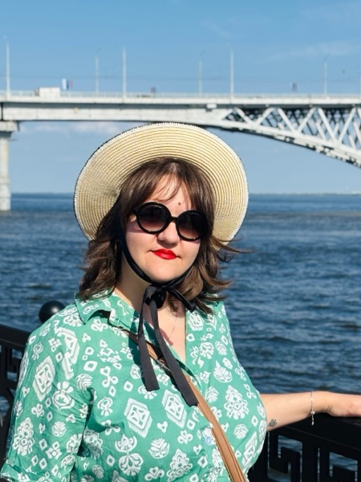

История
Захотелось, чтобы своих было видно
Наверное, это знакомо каждому: видишь мост через Волгу на чужой фотографии — и сразу становится тепло, хочется написать человеку, даже если вы совсем незнакомы.
Так и появился эмалевый значок «Назук». Тёплая выпечка на куртке или рюкзаке — знак, что ты свой. Увидели такой же у кого-то? Подходите и знакомьтесь, повод уже есть.